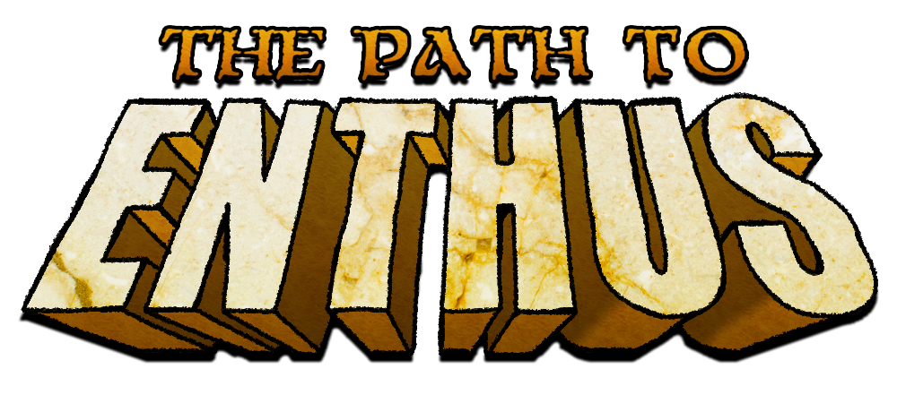

Un juego de plataformas no lineal fantástico y conmovedor.
The Path to Enthus es un juego de plataformas con temática de fantasía, el cual nos sumerge en un mundo donde reina el caos, junto con seres mitológicos nunca antes vistos.
Grupo N, TEAM OthaGod:
- Antonio Ponce Hurtado
- Alejandro García Martinez
- Diego Ángel Isasa Martín
- Lenin Anderson Carrasco Romero
ATENCIÓN: Esta página simula la campaña de microfinanciación de un videojuego ficticio y no representa un producto real. Práctica de Multimedia, 1º GDDV - Curso 21/22 (Móstoles), URJC. La URJC no se hace responsable del contenido expuesto por el autor.
The Path to Enthus es un videojuego de plataformas no lineal perteneciente a los géneros de acción y aventuras, que busca adentrar al jugador en un complejo mundo de fantasía lleno de lugares y misterios que explorar, carismáticos personajes con los que interactuar e imponentes jefes que ponen a prueba habilidad y reflejos con un combate ágil y diverso en sus mecánicas.
Desde Team OthaGod buscamos presentar un producto a la altura de las demandas y tendencias actuales entre los jugadores tanto dedicados al género como de todo aquel ajeno a este que busque una experiencia de juego sólida y competente.
El protagonista, un humilde trabajador que se dedica a vender chatarra en su aldea, tiene una visión en la que los propios dioses se le dirigen para encomendarle una misión. Enthus, la tierra sagrada donde habitan todas las deidades, está siendo atacada por una fuerza maligna, y él es el elegido.
A su vez, deberá conocer a todos los emperadores de cada reino. Años atrás comenzaron a surgir tensiones que están a punto de explotar, y si eso ocurriese, la guerra acabaría con la paz en el mundo.
Nuestro protagonista deberá dejar a su familia y su hogar atrás, y salvar el mundo que tanto quiere.
Respecto al gameplay de The Path to Enthus, este se caracteriza por su simplicidad a la hora de jugarlo, ya que es muy intuitivo para el jugador moverse por el mapa. Esto se debe, en gran parte, por el hecho de ser un juego de plataformas 2D, el cual tiene pocas posibilidades de que el jugador se pierda y no sepa qué hacer.
Sin embargo, esto no quita que sea un juego sencillo de superar. A medida que nos vamos acercando al final del juego, la dificultad del mismo irá en aumento, debido a la aparición de nuevos personajes, zonas nunca antes vistas y mecanismos que no son tan intuitivos como los primeros usados al principio del juego.

The Path of Enthus cuenta con una banda original que envuelve su mundo y otorga al jugador la experiencia lo más disfrutable posible. El objetivo del equipo está entre la hora y media y dos horas de banda sonora para acompañar a la totalidad de contenido del título.
A continuación podéis escuchar un fragmento de la música del título:
| Nivel de contribución | Descripción | Precio | Entrega |
|---|---|---|---|
| Elfo | Acceso al juego 3 días antes de su lanzamiento con 3 espectos exclusivos para el jugador | $10 | 3 dias antes del lanzamiento |
| Paladín | El contenido del nivel de contribución "Elfo" + Soundtrack digital del juego + 3 fondos de pantallas exclusivos 4K | $25 | Día de lanzamiento |
| Hechicero | El contenido del nivel de contribución "Paladín" + taza y póster exclusivos | $35 | De 4 a 6 semanas desde el lanzamaniento |
| Rey | El contenido del nivel de contribución "Hechicero" + Libro de arte y vinilo con la banda sonora original | $50 | De 3 a 5 meses desde el lanzamaniento |
| $15.000 | Objetivo inicial para dar comienzo al desarrollo con un lanzamiento asegurado del juego. |
| $30.000 | Añadir modo BOSS RUN al juego para aquellos jugadores que hayan completado el juego. |
| $55.000 | Versión del juego para la plataforma Nintendo Switch. |
| $80.000 | DLC gratuito posterior al lanzamiento con una nueva zona y hasta 8 nuevos jefes. |
| $150.000 | Traducción oficial al japonés con fecha de salida posterior al lanzamiento. |
| Carrasco Romero, Lenin Anderson | gdfgdf |
| Alejandro, García Martinez | hdfghfgfghgh |
| Isasa Martín, Diego Ángel | dfggdfgdf |
| Ponce Hurtado, Antonio | tyutyutyuty |
PREGUNTAS FRECUENTES
¿PARA QUÉ PLATAFORMAS SALDRÁ EL JUEGO?
El juego en su lanzamiento estará disponible exclusivamente en PC para Windows, MAC Y LINUX, steam, en la plataformas de venta: Steam, GOG y Epic Games Store. Si se alcanza el objetivo extra 2 empezaremos el proceso de lanzar una versión para Nintendo Switch, en una fecha posterior a la de lanzamiento.
¿LOS ENVÍOS DE LOS PRODUCTOS SON INTERNACIONALES?
Por supuesto, cualquier persona podrá recibir el producto donde quiera que esté.
¿EN QUÉ IDIOMAS ESTARÁ DISPONIBLE?
Para el lanzamiento el juego podrá jugarse en los siguientes idiomas: inglés, español, francés. Si se alcanza el objetivo extra 5 dará comienzo el proceso de traducción oficial al japonés para una fecha posterior al lanzamiento.
¿EL JUEGO CONTARÁ CON LOGROS DESBLOQUEABLES?
Sí, The Path to Enthus contará con una amplia lista de logros para aquellos jugadores más dedicados en todas las plataformas.
¿EDAD MÍNIMA PARA PODER ADQUIRIR EL JUEGO?
The Path to Enthus tiene una clasificación de edad según el código PEGI de 7 años, con las etiquetas: violencia, miedo
¿EL JUEGO TENDRÁ COMPATIBILIDAD CON MANDO EN PC?
Sí. The Path to Enthus tiene compatibilidad completa con mando, y contará con opciones de personalización de las acciones de cada botón
COMENTARIOS
CONTACTO
-
Dirección
C. Tulipán, s/n, 28933 Móstoles, Madrid, Spain
-
Correo de contacto
thepathofenthus@gmail.com -
Teléfono
916 65 50 60 -
Redes sociales